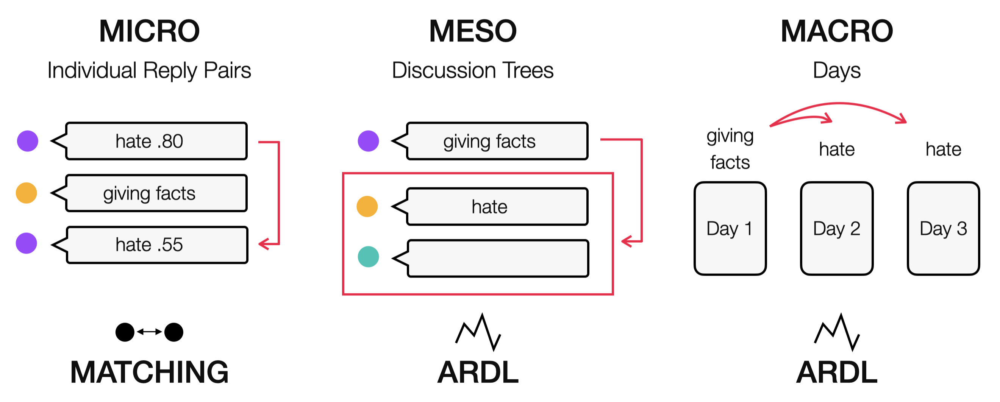
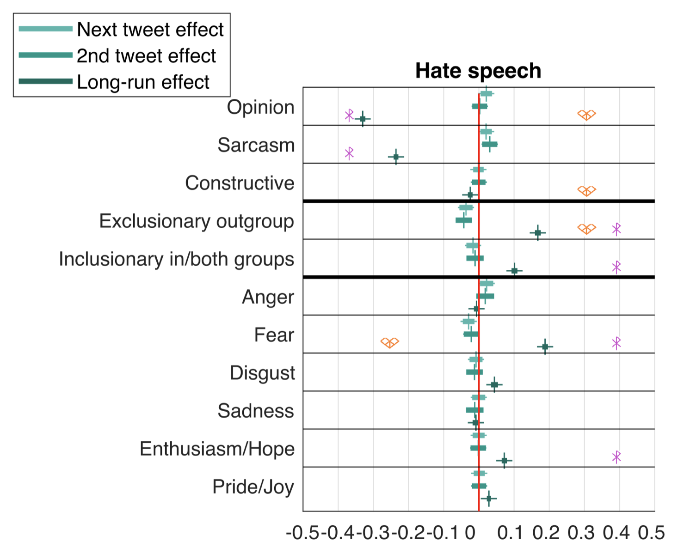

Investigating the Effectiveness of Counter Speech Strategies in Online Political Discourse
How do we practice successful counter speech?
Hate speech includes derogatory speech against individuals or groups on the internet based on the victim's group membership. It also includes expressing harmful stereotypes or encouraging violence. Hate speech biases online discussions towards extreme minorities and silences the vast majority holding centrist or more balanced opinions.
While hate speech is increasingly better understood, counter speech is still not explored sufficiently.
Besides content moderation, one promising way to oppose hateful speech on the internet is engaging in counter speech. Counter speech is often only defined as speech opposing hate. However, we don't have a clear understanding of what counter speech is compared to what it is not.
Therefore the current project aims at identifying types of counter speech and investigating their effectiveness.
A unique natural experiment of hate versus counter groups in Germany
In the late 2010s two dedicated hate and counter speech groups were active on German Twitter: Reconquista Germanica (RG) and Reconquista Internet (RI). In this project, we are collaborating with Mirta Galesic and team from the Santa Fe Institute, New Mexico, USA. Joshua Garland curated a fantastic dataset of Twitter conversations under news pieces of major German media outlets, where self-identifying RG and RI members were active.
Curating a dataset of counter speech strategies
Based on Tweets of this dataset we developed a classification scheme of counter speech strategies. The classification scheme is grounded in our data and was developed by a team of German speaking, politically aware psychologists. It comprises four dimensions, namely argumentative strategy, activation of in-vs-outgroup concepts, social psychological goal, and presence or absence of hateful speech.
The classification scheme constituted the basis to train four machine learning classifiers, accordingly. We used an iterative training approach relying on "confident examples", i.e., examples where human annotators or human and a preliminary classifier agree. This allowed us to achieve high classification accuracy despite noisy and ambiguous data.
Our methodological apporach is documented in our guidelines for measuring psychological and sociological constructs in large-scale text.
Results sneak peak: Raising simple opinions is beneficial, while raising any in- and outgroup thinking is not.

We analyzed over 130,000 discussions on German Twitter between 2015 and 2018 with over one million tweets and 130,000 distinct users. We investigated the relationship between argumentative strategy, in- and outgroup thinking, social psychological goal and emotions on quality of discourse represented by hate speech, toxicity, extremity of speech and speakers. We did so on the micro level using matching, and on the meso and macro level using autoregressive distributed lag modelling (ARDL) (see image on the left).

The plot on the right gives a sneak peak into the analyses on hate speech on the meso level. Raising simple opinions, not necessary factual, but also without insults, seems to have the most effect on reducing hate speech in the following conversation. On the other hand, mentioning all kinds of groups is detrimental. Similarly, if a text is emotional, hate increases in the following conversation, for positive emotions such as pride and joy, as well as negative emotions such as fear.
Our preprint is full of interesting insights! For more detail, please visit arXiv.